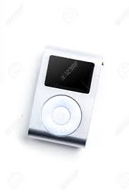
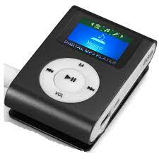
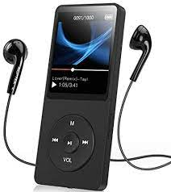
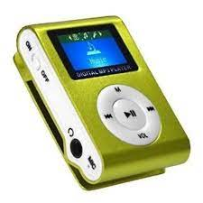
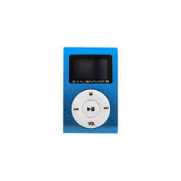
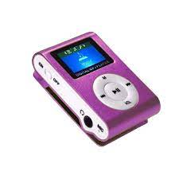
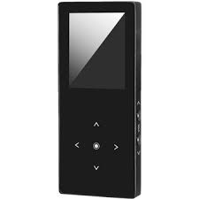
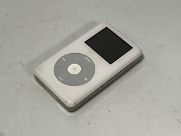
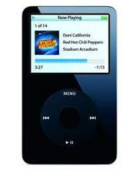

FICHA:2558346
EJERCICIO 12
Comparativa de reproductores MP3
|


MP3 mini |

MP3 grande |
||||
|---|---|---|---|---|---|
| Capacidad de almacenamiento | 4GB (1.000 canciones) |
8GB (2.000 canciones} |
16GB (4.000 canciones) |
30GB (7.500 canciones) |
80GB (20.000 canciones) |
| Colores |    |  |   | ||
| Pantalla | LCD de 3 cm (diagonal) con retroiluminación | LCD de 6 cm (diagonal) con retroiluminación | |||
| Tiempo de carga | Unas 3 horas | Unas 4 horas | |||
| Unas 2 horas para alcanzar el 80% de la capacidad | |||||
JUAN SEBASTIAN CASTRO SUAREZ © centro de biotecnologia agropecuario